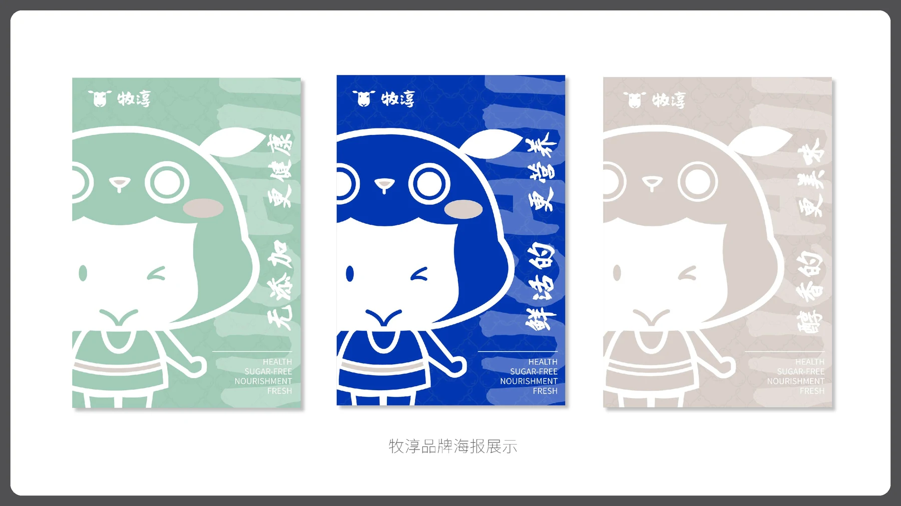
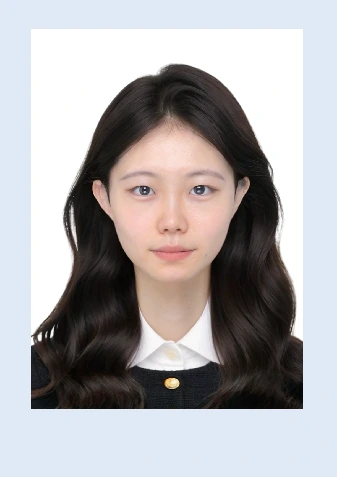

01
爱奇艺少儿与动漫频道
覆盖 TV、移动端与 Web 的频道专辑、首页入口及运营活动视觉。通过统一构图、色彩与人物呈现标准，让高频内容生产保持一致，也兼顾不同屏幕的观看距离与信息密度。
- 角色
- 视觉设计实习生
- 产出
- 焦点图 / 图标 / Card / 宣传海报
- 协作
- 内容运营 / 审核 / 产品
视觉设计 / 品牌与内容体验北京
你好，我是董鑫。北京印刷学院视觉传达设计硕士在读，拥有爱奇艺少儿业务多端设计经验。 我把审美判断、信息组织和业务目标放在同一个画面里。
先看内容与人，再决定画面的秩序。让创意能被识别，也能被真实落地。
精选作品
从真实业务到完整品牌提案，呈现我如何理解受众、建立视觉语言并推动落地。
打开 63 页完整作品集覆盖 TV、移动端与 Web 的频道专辑、首页入口及运营活动视觉。通过统一构图、色彩与人物呈现标准，让高频内容生产保持一致，也兼顾不同屏幕的观看距离与信息密度。

以“牧羊”与“奶瓶”为识别原点，建立从标志、色彩、辅助图形到 IP、包装和户外传播的完整品牌系统，平衡儿童亲和力与天然、健康的产品感知。
从汉字语义、古籍结构与节气意象中提取视觉线索，用字形、网格和强对比构图重译传统文化，让信息在远距离场景中依然有清晰节奏。
围绕中国服饰、书法与文字结构进行系列化探索。从资料研究、人物草图到色彩系统与字体造型，把艺术理论积累转化为可以传播的当代视觉语言。
实践经历
我习惯把需求、排期、反馈和终端规范一起纳入设计判断，也能在高频协作中持续沉淀方法。
少儿事业部 · 设计实习生
独立承担少儿与动漫频道多端视觉物料；建立批量物料自检标准；对接内容运营、审核与产品团队，推进多场景物料上线。
雇主品牌实习生
负责招聘账号活动海报、主题封面与长图笔记，参与内容创意会；与拍剪同学协作完成贴纸、字幕条等视频素材二次包装。
美术理论讲师
系统讲授中外美术史、现代设计史与基础美学，持续输出艺术理论科普内容，并把文化研究转化为结构清晰的讲解与视觉文案。
能力工具箱
品牌识别、IP 设定、包装延展、海报与活动主视觉。
频道入口、内容封面、长图笔记与多端运营物料。
系列插画、文化主题视觉、字体创意与动态呈现。
Figma、Photoshop、Illustrator、After Effects 与生成式图像工具。

董鑫 · 视觉传达设计硕士在读
关于我
我在书法学本科阶段建立对文字、结构与传统文化的敏感度，在视觉传达研究生阶段继续学习交互设计、服务创新与多媒介表达。 这让我既能追问“为什么这样设计”，也能把答案落实到具体尺寸、流程和协作里。
北京印刷学院
视觉传达设计 · 硕士
河北师范大学
书法学 · 本科
部分荣誉